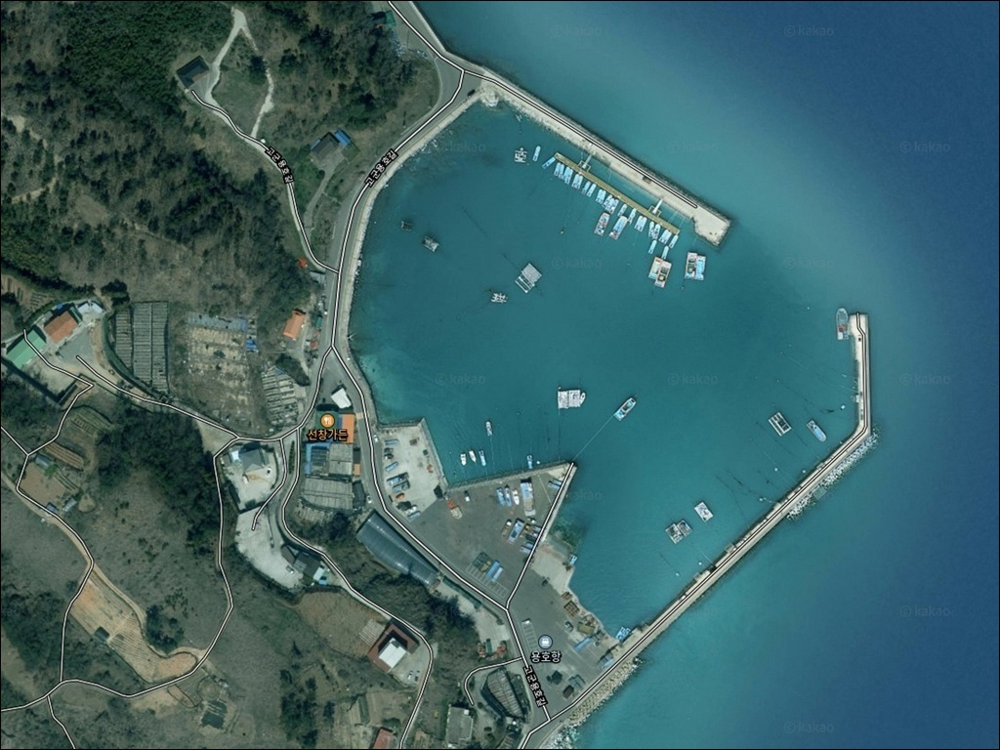
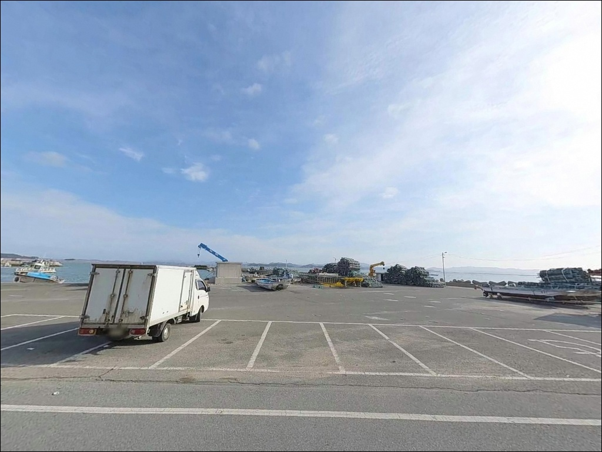
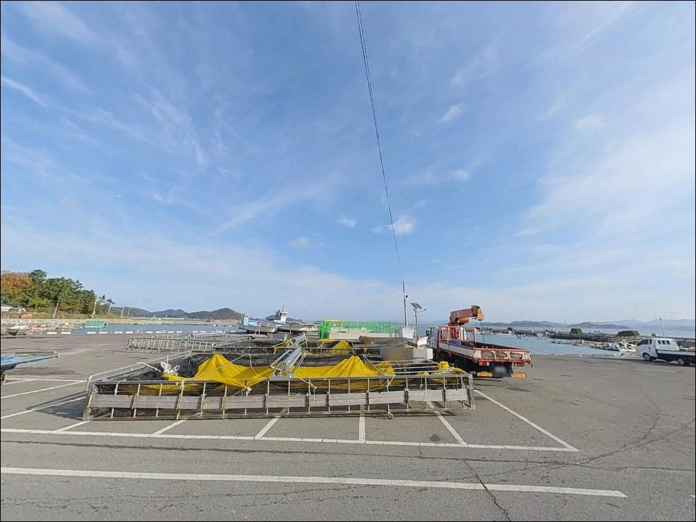
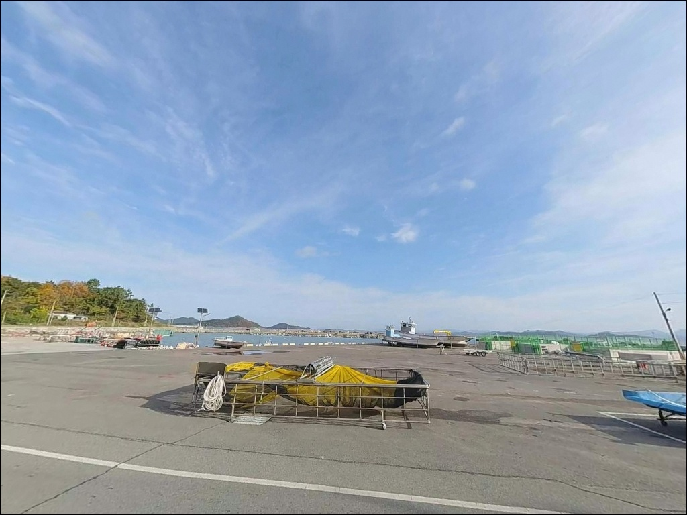
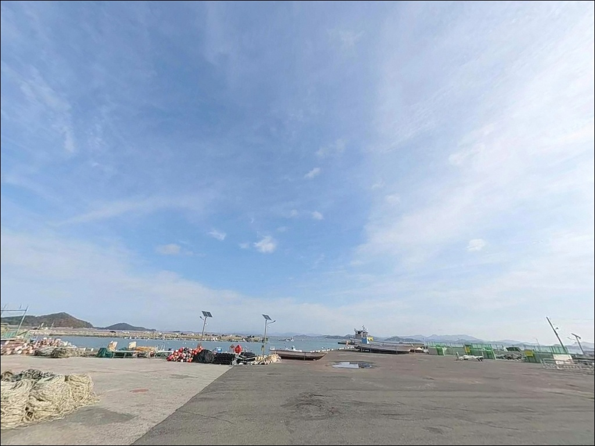
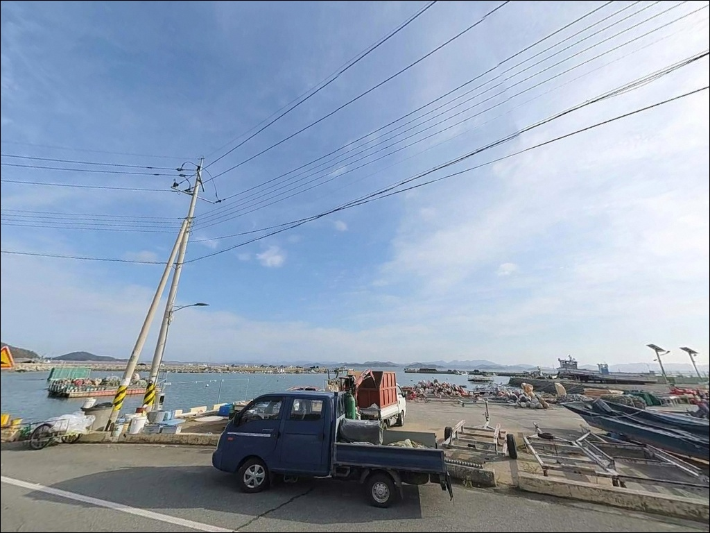
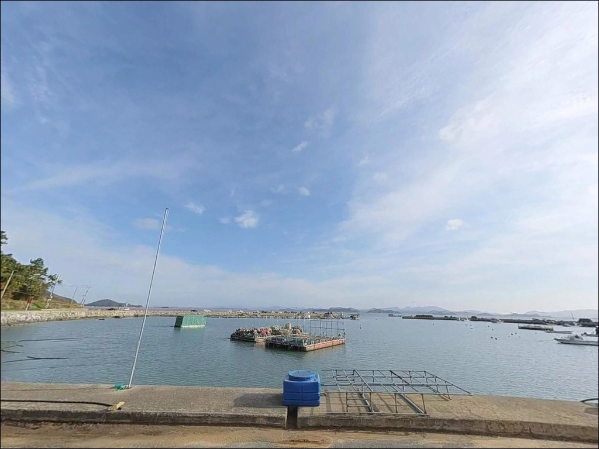
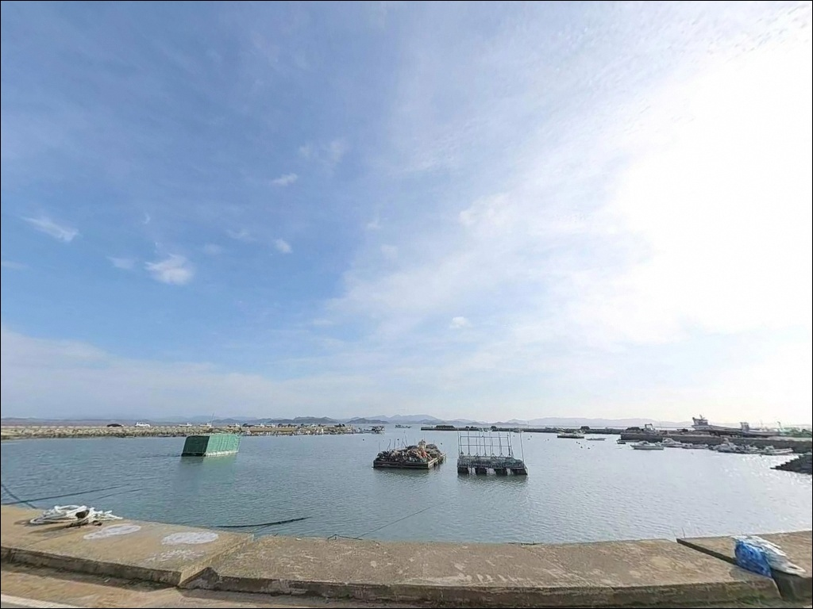
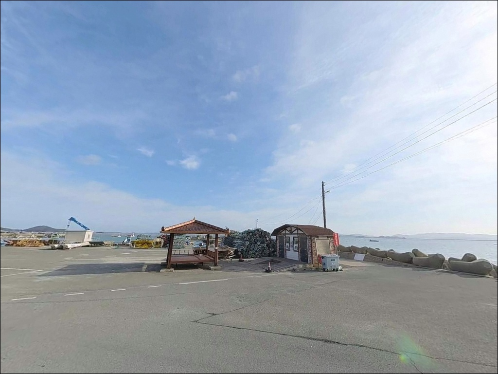

용호항, 용호방파제, 진도 전남 진도군 고요한 수면을 바라보며 차박, 낚시를 즐기기 좋은 해안
이 페이지에는 광고(제휴 링크 포함)가 있으며, 광고 링크를 통해 구매하면 운영자가 판매 수익 또는 수수료를 받을 수 있습니다. 포인트 사진: 카카오맵 스카이뷰·로드뷰. 이 페이지의 지도·사진 이미지는 카카오맵의 실제 서비스 이미지와 다를 수 있습니다.


포인트 안내
용호항(용호방파제)
전남 진도군 고군면 금계리 14-5
용호항에서 북방파제나 내항에 자리를 잡으면
원투대만 세우고 조과 없이 철수하는 경우가 생깁니다.
북방파제는 조류가 약하고 퇴적이 심한 편이며,
내항은 어선 계류 공간이라
낚시 여건 자체가 제한되는 구조입니다.
남방파제 외항이 이 포인트의 실질적인 공략 구간입니다.
이 글은 용호항 남방파제 외항의
자리 선택 조건, 물때 판단 기준,
낚시 스타일 적합성을 중심으로 정리합니다.
조황 단정이나 특정 어종 보장은
이 글의 범위에 포함되지 않습니다.

1. 포인트 위치 및 진입 동선
진도 고군면 금계리는 신비의 바닷길 관광지와
같은 해안선을 공유하는 위치에 있습니다.
용호항까지는 해안도로를 따라 접근하는 방식이 기본이며,
항 입구까지 포장도로가 이어집니다.
관광버스와 행사 차량이 오가는 수준의 도로가
이 구간까지 닿아 있어
승용차부터 SUV 수준까지 진입에 큰 부담이 없습니다.
주차는 방파제 입구 공터를 이용하는 방식이 일반적입니다.
성수기에도 주차 공간 자체는
여유가 남는 편입니다.
방파제 상단까지 차량을 올리는 경우도 있으나,
다른 낚시인의 통행과 안전을 고려하면
입구 공터에서 장비를 직접 이동하는 방식이 적합합니다.
방파제 안쪽 넓은 공간으로 회차가 가능한 구조이며,
캠핑 장비를 실은 차량이라도
진입 자체는 어렵지 않은 편입니다.
진입 전 해안도로 합류 지점의 도로폭을
네이버 지도로 미리 확인해 두면 더 안전합니다.

2. 차박 환경 및 야간 체류 여건
용호항은 금계리 어촌 마을과 인접한 구조입니다.
지방어항 규모의 항만으로
항 입구 주변에 기본적인 가로등이 설치되어 있어
야간에 완전한 암흑 환경은 아닌 편입니다.
다만 남방파제 끝단으로 갈수록 조도가 떨어지므로
헤드랜턴은 별도로 준비하는 것이 기본입니다.
차박이란 차량을 숙박 공간으로 활용하며
현장에서 하룻밤 머무는 여행 방식입니다.
용호항에서 낚시 후 하룻밤 머무는 방식은 가능하나,
어촌 주민 생활권과 가까운 특성상
프라이버시 확보 여건은 제한적인 편입니다.
이른 새벽 어선 출항 시 소음과 조명이 발생하므로
물양장 바로 옆보다는 입구 공터 쪽이 체류에 적합합니다.
이 포인트는 쓰레기 문제로 지역 주민과의
갈등이 발생한 사례가 있는 곳입니다.
음식물 쓰레기와 낚시 채비 쓰레기 모두
전량 수거해 되가져가는 것이
이 포인트를 계속 이용할 수 있는 기본 조건입니다.


3. 주변 편의시설 및 인프라 현황
용호항에서 차량으로 수 분 거리에
신비의 바닷길 회동관광지가 있습니다.
이 관광지에는 공중화장실 4동과 주차장 4개소가
공공시설로 조성되어 있습니다.
출조 중 화장실 이용은 이 시설을 기준으로 삼으면 됩니다.
반경 3km 이내에 편의점이나 마트는 확인되지 않습니다.
출발 전 진도읍에서 식수, 얼음, 낚시 소품,
연료까지 미리 갖추고 진입하는 것이
현실적인 준비 방식입니다.
응급 상황 발생 시에도
진도읍 방면 이동을 기본 경로로 삼아야 합니다.

4. 진입 전 반드시 챙겨야 할 준비사항
용호항 방문 전 가장 먼저 확인할 것은 물때입니다.
진도 해역은 서해와 남해가 만나는 위치에 있어
조차가 크고 조류 변화가 빠른 편입니다.
간조 시에는 방파제 앞 갯벌이 상당 부분 드러나
원투 채비가 갯벌에 닿는 상황이 발생합니다.
바다타임에서 용호항 기준 물때를 확인하고
만조 전후를 노려 출발 시각을 맞추는 것이
이 포인트의 기본 전략입니다.
남방파제 외항 쪽은 외해에 직접 노출되어
바람과 너울 영향을 받는 구조입니다.
진도 해역은 기상 변화가 빠른 편이라
당일 아침 해양 기상 예보를 다시 확인하는 것이
포인트 낭비를 막는 조건입니다.
기상 악화 징후가 보이면
즉시 철수하는 것이 방파제 낚시의 기본 안전 수칙입니다.
방파제 외항 석축과 테트라포드 구간은
젖어 있을 때 미끄러움이 심합니다.
구명조끼와 미끄럼 방지 신발은 필수이며,
원투 채비의 경우 바닥 여건상
채비 손실이 생기는 경우가 있으니
여분 채비를 넉넉히 준비하는 편이 좋습니다.

5. 외항에서 조과가 달라지는 이유 — 지형 분석
용호항은 남방파제와 북방파제로 구성된 지방어항입니다.
남방파제는 방파제 길이가 약 450m에 달하며
콘크리트 상단과 석축·테트라포드 측면이 혼합된 구조입니다.
외항은 진도 남동 해안의 외해로 직접 열려 있어
조류 흐름이 방파제 끝단까지 살아있는 구조입니다.
수심은 방파제 초입 구간 기준 3~5m 수준에서
끝단으로 갈수록 4~6m 정도로 깊어지는 패턴입니다.
외항 바닥은 모래와 펄이 섞인 저질로
원투 채비가 자리를 잡기 좋은 구조입니다.
남방파제 외항 끝단은 수심이 깊어지면서 조류가 닿는 구간으로,
원투낚시 조과가 집중되는 자리입니다.
반면 북방파제는 조류가 약하고
퇴적이 심한 편이라
남방파제에 비해 낚시 여건이 제한적입니다.
내항은 어선 계류와 작업 공간 비중이 높고
바닥 여건이 좋지 않아
본격적인 낚시 포인트로 삼기에 맞지 않는 구조입니다.
최신 조황은 출조 전에 꼭 검색해 보시기 바랍니다.


6. 포인트에 어울리는 낚시 스타일
이 포인트에서 가장 잘 맞는 방식은 원투낚시입니다.
남방파제 외항 전역을 대상으로
원투 채비를 세워 두는 방식이 기본 공략법이며,
성수기에는 난간을 따라 원투대가 줄지어 선 모습을
볼 수 있을 만큼 대표적인 낚시 방식으로 자리 잡혀 있습니다.
만조 전후 타이밍에 바닥 탐색을 집중하는 방식이
이 포인트 구조에 가장 잘 맞습니다.
가을철에는 에깅을 병행해볼 수 있습니다.
에깅이란 갑오징어·무늬오징어를 대상으로
에기(인조 미끼)를 사용하는 루어낚시 방식입니다.
방파제 외항과 석축 주변에서
주꾸미·갑오징어를 노리는 조사들이
원투낚시와 병행하는 경우가 있습니다.
볼락 라이트게임도 시도해 볼 수 있는 방식입니다.
방파제 석축과 테트라포드 사이 공간은
볼락과 우럭이 서식하기 좋은 구조 조건입니다.
야간에 소형 지그헤드 채비로
석축 경계를 천천히 탐색하는 방식이
이 포인트에 어울리는 공략입니다.
외항 쪽 조류 흐름을 활용하면
감성돔 찌낚시도 시도해볼 수 있는 방식입니다.
봄~초여름 시즌에 외항 방향으로
찌를 흘리는 방식으로 접근하는 것이
이 포인트 구조에 맞는 공략입니다.

7. 대안 포인트 및 플랜 B 동선
용호항 여건이 여의치 않을 때
가장 가까운 대안은 벌포항 방파제입니다.
용호항 북측 약 3km 거리의 지방어항으로,
같은 해안선이지만 조류·수심 패턴이 달라
풍향이나 물때 상황에 따라 이동 낚시 대상으로 삼기 좋은 위치입니다.
용호항 남동쪽 약 4.3km 거리에 있는
초평항 방파제도 같은 해안선의 대안입니다.
진도 남동부 해안에 위치한 방파제 구조로,
원투·찌·루어 방식을 다양하게 시도해볼 수 있는
대안지로 고려할 수 있습니다.
인프라가 더 갖춰진 환경을 원한다면
가계해수욕장 방파제가 대안이 됩니다.
발판이 편하고 화장실과 주차 여건이
용호항보다 안정적인 편이라,
가족 단위 출조 시 먼저 들르기 좋은 곳입니다.

남방파제 외항과 물때를 알면
용호항이 달라 보입니다
원투낚시를 주력으로 삼는 낚시인이라면
용호항 남방파제 외항은 잘 맞는 구조입니다.
수심이 방파제 끝단으로 갈수록 깊어지고
외해 조류가 닿는 환경이라
다양한 바닥 어종을 노려볼 수 있는
지형 조건을 갖추고 있습니다.
가을철에는 에깅이나 볼락 라이트게임을
병행하는 방식으로 운용 폭도 넓어집니다.
반면 물때 계산 없이 간조 때 도착하거나,
북방파제나 내항에 자리를 잡으면
온종일 원투대만 세워두고
빈손으로 돌아오는 경우가 생길 수 있습니다.
남방파제 외항, 만조 전후 타이밍, 쓰레기 전량 수거,
이 세 가지를 갖추고 간다면
진도 고군면 해안에서 기억에 남는
원투 출조가 될 수 있는 곳입니다.
신비의 바닷길 해안도로를 따라 용호항에 다다라
남방파제 끝단에서 원투대를 드리우는 하룻밤은,
낚시와 조용한 차박을 함께 즐기는
진도 서남해의 방식입니다.